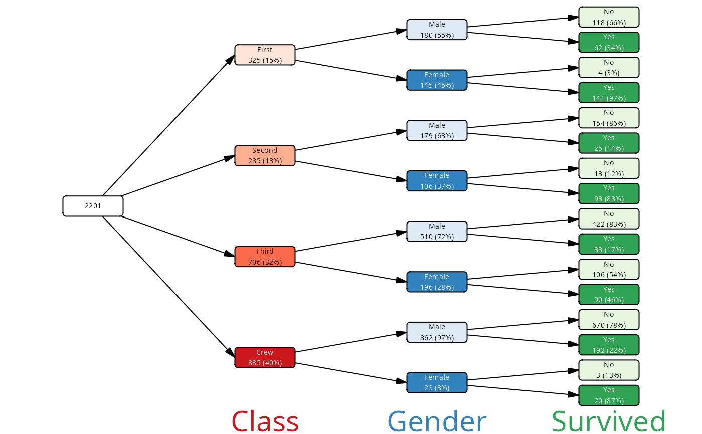

Add aliases columns to vtree
add_aliases.RdAliases are alternative labels / variable names which are shown on the plots. This function allows to define aliases for both, variable names and the variable values (levels).
Usage
add_aliases(vtree, ...)
# S3 method for class 'vtree_pattern'
add_aliases(pattern, val_alias = NULL, col_alias = NULL)
# S3 method for class 'vtree'
add_aliases(vtree, val_alias = NULL, col_alias = NULL)Arguments
- vtree
an object of class vtree
- pattern
an object of class vtree_pattern (produced by
pattern())- val_alias
A list specifying aliases for the levels of the variables. Each element of the list should be a named character vector, where the names are the levels of the variable and the values are the labels to be displayed for those levels. If NULL (default), the original levels of the variables are used as labels. The list needs not to be complete; if a variable is not included in the list, its original levels are used. The aliases are then used to construct the labels and also stored in the column 'val_alias' of the nodes data frame. The list may include aliases for NA values under then name
NAs. If aval_aliascolumn is present, it will be overwritten.- col_alias
A list specifying aliases for the columns (variables). Each name of the list is a column/variable name (one of the values of
names(vtree)) and the value is the alias to be used for that variable when constructing labels. If a name is missing from the list, the original column name is used. The aliases are then used to construct the labels and also stored in the column 'col_alias' of the nodes data frame. If acol_aliascolumn is present, it will be overwritten.
Value
Returns an object of class vtree with added columns col_alias
and val_alias in the node data frame. The aliases are also stored as
an attribute of the vtree object.
Examples
vt <- vtree_from_freqtable(Titanic, Class, Sex, Survived) |>
add_aliases(val_alias = list(Class = c("1st" = "First",
"2nd" = "Second",
"3rd" = "Third")),
col_alias = list(Sex = "Gender"))
plot(vt)
#> Warning: There was 1 warning in `mutate()`.
#> ℹ In argument: `size = tidygraph::map_bfs_back_dbl(...)`.
#> Caused by warning:
#> ! The `father` argument of `bfs()` is deprecated as of igraph 2.2.0.
#> ℹ Please use the `parent` argument instead.
#> ℹ The deprecated feature was likely used in the tidygraph package.
#> Please report the issue at <https://github.com/thomasp85/tidygraph/issues>.
